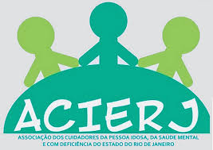

Formação e Capacitação
Cursos, oficinas e seminários para qualificação profissional e empoderamento de cuidadores.
Saiba mais →
Associação dos Cuidadores do Estado do Rio de Janeiro
A ACIERJ é uma organização da sociedade civil sem fins lucrativos dedicada à defesa dos direitos dos cuidadores e à luta por justiça social, inclusão e dignidade para todos.
Cuidadores: profissionais que constroem comunidades mais solidárias
A ACIERJ é um espaço de mobilização, acolhimento e luta pelos direitos dos cuidadores brasileiros. Reconhecemos a importância vital do trabalho de cuidado e nos posicionamos ao lado de todos aqueles que dedicam suas vidas ao bem-estar alheio.
Nossa organização trabalha na intersecção de diversas pautas sociais, compreendendo que a luta pelos direitos dos cuidadores é inseparável da defesa de outros direitos fundamentais e da promoção de uma sociedade verdadeiramente justa e inclusiva.
Fortalecimento, formação e valorização de quem dedica a vida ao cuidado.
Defesa dos direitos, dignidade e acesso a cuidados de qualidade na terceira idade.
Inclusão, acessibilidade e participação plena na vida comunitária.
Políticas públicas de intervenção, acolhimento e direito à moradia.
Luta antimanicomial e direito ao acompanhamento em liberdade e dignidade.
Justiça social, igualdade e defesa dos direitos fundamentais de todos.
A ACIERJ está alinhada com lutas históricas por justiça e dignidade:
Acesso a direitos, cuidados dignos e participação social ativa.
Respeito, dignidade e direitos humanos para todas as identidades e orientações.
Interseccionalidade, equidade racial e empoderamento feminino.
Fim da institucionalização e direito à desinstitucionalização com dignidade.
Redistribuição de recursos, igualdade de acesso e combate a todas as formas de opressão.
Cursos, oficinas e seminários para qualificação profissional e empoderamento de cuidadores.
Saiba mais →Grupos de apoio, terapia comunitária e espaços de fala para quem cuida.
Saiba mais →Defesa de políticas públicas, campanhas sociais e articulação com gestores públicos.
Saiba mais →Conexão entre cuidadores, organizações parceiras e movimentos sociais afins.
Saiba mais →Colabore com a ACIERJ e seja parte da transformação social. Seja um cuidador em luta, um apoiador ou um parceiro nessa jornada de dignidade e justiça.